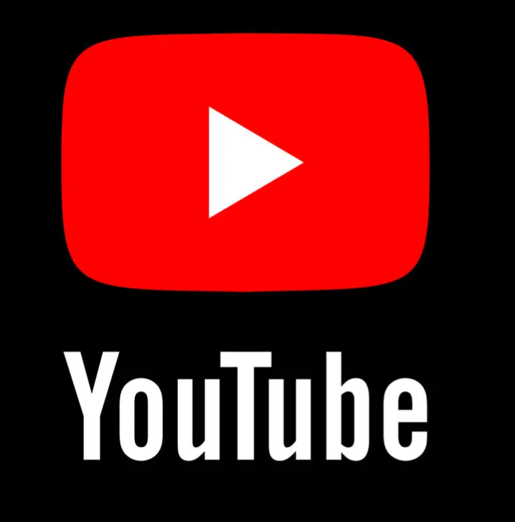

Why YouTube Now?
YouTube is the ultimate content platform with over 2 billion active users, offering massive reach and long-term growth potential. Unlike other platforms, its algorithm rewards both short-term trends and evergreen content, ensuring continuous visibility. With multiple monetization options like ads, memberships, and sponsorships, creators can turn their passion into a sustainable income.
Why is YouTube the Best Platform to Join?
YouTube stands out as the best platform because it combines massive reach with powerful content discovery through its algorithm. Unlike other platforms, videos have long-lasting visibility, allowing creators to grow over time. Its diverse monetization options make it a reliable space for turning creativity into a sustainable income.
The Potential of YouTube
With the right strategy, you can create a full-time income from YouTube by building a loyal and engaged audience. YouTube offers unlimited growth potential, allowing creators to reach a global audience and build a personal brand. Recently, the platform has been boosting small channel performances, leading to more engagement and views even for new creators.